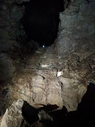

Landing
You land on Saturn but your gut can't help but have this feeling you're not supposed to be standing here. You try to ignore it as you approach a small pile of dirt. You take a seat on the dirt to try and wrap your head around where the crystal could be when you fall through and end up falling for what seems like forever. When you finally land with the lack of gravity, you realize there is no way back up. You're stuck and questioned why you went against that feeling

DEAD END (always trust your gut)